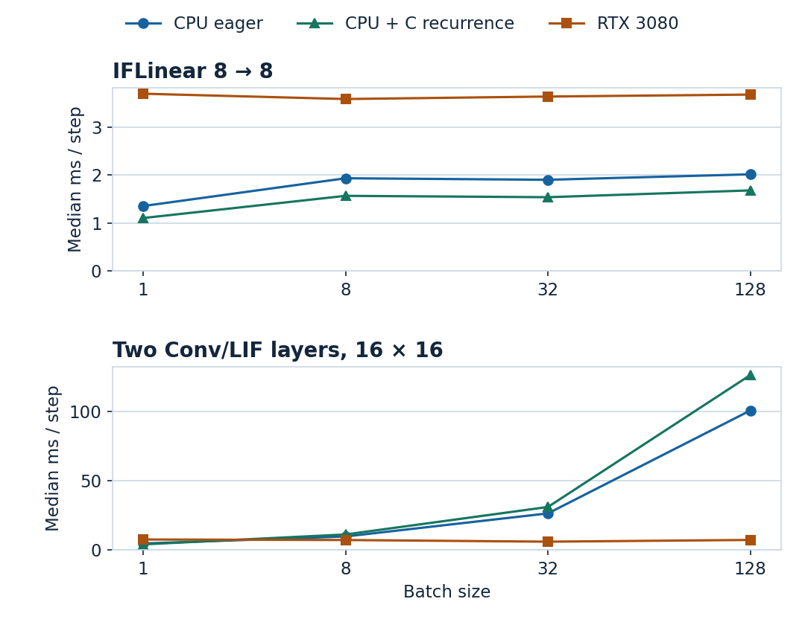

Train, inspect and deploy with PyTorch#
Follow the workstation installation guide. Choose a CUDA-enabled PyTorch wheel for NVIDIA training, then install the compiler extra in the same environment.
Run the synthetic CPU workflow in a new directory:
python examples/training_workflow.py --output /tmp/spikepress-training-new
spikepress training-report /tmp/spikepress-training-new/training.jsonl
spikepress inspect /tmp/spikepress-training-new/model.spm
It performs four updates and writes training.jsonl, state_dict.pt,
resume.pt, model_config.json, preparation and compiler reports,
events.npy, golden.npy, validation.json and model.spm. It also checks
the package round trip and CPU golden. This is an API example, not a task
accuracy result or board run. See training reports for log
contents and completion limits.
For the included image, use another new output directory and add
--bitstream bitstreams/pynq-z2/spikemold.bit. Its matching HWH and profile
sidecar must be present. Selecting the profile does not program a board.
Train on a GPU#
Run the CUDA verification example before training to confirm that PyTorch can execute on your GPU.
The following example runs two training updates with a synthetic binary input. It uses CUDA when available. Move the model to its device before constructing the optimizer, and keep each input and target on that same device.
import copy
import torch
from spikepress.nn import LIFConv2d
from spikepress.sparse_event_training import SparseEventTrainingPreset
torch.manual_seed(7)
device = torch.device("cuda" if torch.cuda.is_available() else "cpu")
preset = SparseEventTrainingPreset(timesteps=4)
model = LIFConv2d(8, 16, kernel_size=3, padding=1, decay_shift=1,
preset=preset).to(device)
model.collect_activity = False
optimizer = torch.optim.SGD(model.parameters(), lr=0.01, momentum=0.9)
for _ in range(2):
events = (torch.rand(8, 4, 8, 16, 16, device=device) > 0.5).float()
target_rate = torch.full((8, 16, 16, 16), 0.25, device=device)
optimizer.zero_grad(set_to_none=True)
rate = model(events).mean(dim=1)
loss = torch.nn.functional.mse_loss(rate, target_rate)
loss.backward()
optimizer.step()
print(f"{device.type}: final training loss {loss.item():.4f}")
export_model = copy.deepcopy(model).cpu().eval()
export_input = events[:1].cpu() # one window, B=1, still T=4
For a real dataset, the loader supplies the windows and targets. If transfer
time matters, use a pinned-memory DataLoader on CUDA and transfer batches
with .to(device, non_blocking=True). Start with a batch that fits GPU memory
and measure throughput. Use the CPU evaluation copy and representative
batch-1 input in the preparation and export workflow below. The standalone
CPU workflow above also checks package export and step-boundary resumption.
CPU and GPU training by batch size#
These synthetic FP32 tests compare an IFLinear 8→8 layer and a two-layer
3×3 Conv/LIF network (8→16→16, 16×16 spatial input). Both use four timesteps
and a fixed binary input. They ran on an AMD Threadripper 3960X and RTX 3080
with PyTorch 2.10.0+cu130. Both CPU paths use one PyTorch thread. The optional
C path sets native_multistep=True and checks that each layer used it.
PyTorch reported AVX2 CPU dispatch. SIMD usage inside the individual kernels
was not profiled.
Each timed step includes zeroing gradients, forward, loss, backward and SGD with momentum. Inputs were already on their device, and each CUDA step synchronized before timing stopped. The table shows median milliseconds per step across ten samples after three warmups.

Step latency on the two example networks. Vertical scales differ between panels.#
IFLinear 8→8
Batch |
CPU eager |
CPU with C recurrence |
CUDA eager |
|---|---|---|---|
1 |
1.36 |
1.11 |
3.70 |
8 |
1.94 |
1.57 |
3.59 |
32 |
1.90 |
1.54 |
3.64 |
128 |
2.02 |
1.68 |
3.68 |
Two spatial Conv/LIF layers
Batch |
CPU eager |
CPU with C recurrence |
CUDA eager |
|---|---|---|---|
1 |
4.68 |
4.05 |
7.57 |
8 |
9.75 |
11.19 |
7.20 |
32 |
26.39 |
31.01 |
5.99 |
128 |
100.56 |
126.11 |
7.25 |
For the tiny linear model the CPU was faster at all four batch sizes. C recurrence reduced its median step time by 17–19%. For the spatial model, CUDA was faster from batch 8 onward. At batch 128, CUDA was about 14× faster than CPU eager (about 17,650 vs. 1,270 samples/s). C recurrence helped the spatial case at batch 1, while CPU eager was faster at larger batches. Changing recurrence alone does not accelerate the convolution or guarantee better throughput.
These timings exclude data loading, transfers, export, and compilation. They use a single CPU thread and eager CUDA. For your model, measure with your loader, CPU thread count, and available GPU memory. Run the diagnostic from a source checkout with CUDA-enabled PyTorch and the C extension:
PYTHONPATH=src python tools/benchmark_training_devices.py --native-cpu
Use --workload linear or --workload spatial to measure one model.
The measurement JSON includes the
individual timings and hardware/software settings. On shared machines,
check for active jobs and acquire the GPU’s resource lock before benchmarking.
Prepare a temporal model#
Native layers use PyTorch modules, autograd and optimizers. Set
SparseEventTrainingPreset(timesteps=T) and pass the full B,T,C,H,W
(2D/linear) or B,T,C,L (1D) tensor. State carries within T and resets between
forward calls; separate timestep calls do not preserve it. See
PyTorch authoring and parameter reference.
Before training or at a checkpoint, inspect an evaluation copy:
import copy
import spikepress
candidate, details = spikepress.prepare(copy.deepcopy(model).eval(), example)
print(spikepress.format_preflight(details["preflight"],
compilation=details["compatibility"]))
Here model and example are yours. Inspection and compilation can execute
the model and do golden work, so avoid running them every optimizer step.
Preflight is advisory; compile is authoritative for the supplied model, shape
and image. Suggested pruning or substitution is not applied automatically and
may require retraining and accuracy validation. See preflight
for status messages. Rerun reports after changing weights, shape or target;
the formatter cannot prove separately supplied reports describe the same model.
Static inventory does not copy the model. Graph-metadata and spike-merge/count
capture use copies and restore CPU RNG, including on errors, but do not preserve
CUDA RNG or arbitrary external side effects. Copies of large dynamic models can
require more device memory; a failed copy raises instead of running the original.
Record training metrics#
The following fragment assumes a task-defined model, loader, optimizer,
criterion, epoch and preflight report. The standalone example above
provides a complete workflow.
with spikepress.TrainingMonitor(every=50, log_path="new-run.jsonl") as monitor:
monitor.report_hardware(report)
for step, (inputs, targets) in enumerate(loader, start=1):
optimizer.zero_grad(set_to_none=True)
loss = criterion(model(inputs), targets)
loss.backward()
optimizer.step()
monitor.update(epoch=epoch, step=step, total_steps=len(loader),
loss=loss.detach())
Use a new JSONL path. The monitor emits the first, every 50th and last step; it records caller-supplied metrics and checks finiteness only when emitted. Emitted CUDA scalars can synchronize. Phase times are host wall time without device synchronization, and overlapping phases are not additive. For summaries, distributed logging and completion limits see reports.
Select multi-step execution#
Convolution combines B and T where applicable; membrane recurrence still depends on previous state. Layers expose optional controls:
layer.collect_activity = False # Only when the loss needs no activity statistics.
layer.compile_multistep = True # Opt in to existing CUDA torch.compile recurrence.
print(layer.execution_report) # Property: observed path from the last forward.
Defaults are collect_activity=True and compile_multistep=False. The CUDA
path has first-call overhead and may recompile for new shapes; CPU uses eager
execution. Saturation-sensitive INT4 cases retain the ordered fallback.
Activity regularizers require telemetry. Inspect the report after a forward and
benchmark after warmup; an enabled flag does not prove a speedup. See
execution for the separate native CPU path and its limits.
The QAT straight-through decay estimator propagates retention through prior state. Integer forward and checkpoint parameters are preserved, but an older QAT checkpoint can follow a different gradient trajectory when continued; revalidate the training outcome. Execution controls do not change the estimator.
Export and resume#
After training, use an evaluation model, then prepare, compile and save. This fragment skips preparation’s compiler validation because compile follows:
prepared, details = spikepress.prepare(model.eval(), example, validate=False)
print(spikepress.format_preflight(details["preflight"],
compilation=details["compatibility"])) # NOT_RUN
compiled = spikepress.compile(prepared, example)
spikepress.save(compiled, "model.spm")
Pass bitstream= to both calls when exporting for a specific image. Default
validate=True performs compatibility checks; False also skips explicit count
capture. prepare deep-copies parameters, binds T, can freeze learnable decay,
and preserves train/eval mode. An optimizer for the original model does not
update the copy. Save architecture, T, reset/decay and execution configuration
with state_dict; .spm is a deployment artifact, not a training checkpoint.
Recompile to a new path after changes.
For the synthetic example, resume four more updates into a new directory:
python examples/training_workflow.py --resume /tmp/spikepress-training-new/resume.pt \
--output /tmp/spikepress-training-resumed-new --steps 4
Its checkpoint stores model, optimizer, fixed input, step and CPU RNG. Exact
continuation is tested for this CPU step-boundary example, not arbitrary data
loaders, schedulers, CUDA or distributed training. model_config.json records
export_target and the optional export_bitstream separately from the legacy
training target. For real data see dataset preparation.
Native event paths use INT4 weights and INT16 state; float training shadows are not a generic post-training converter. See operations, residuals, input layouts and the parameter reference for supported boundaries.